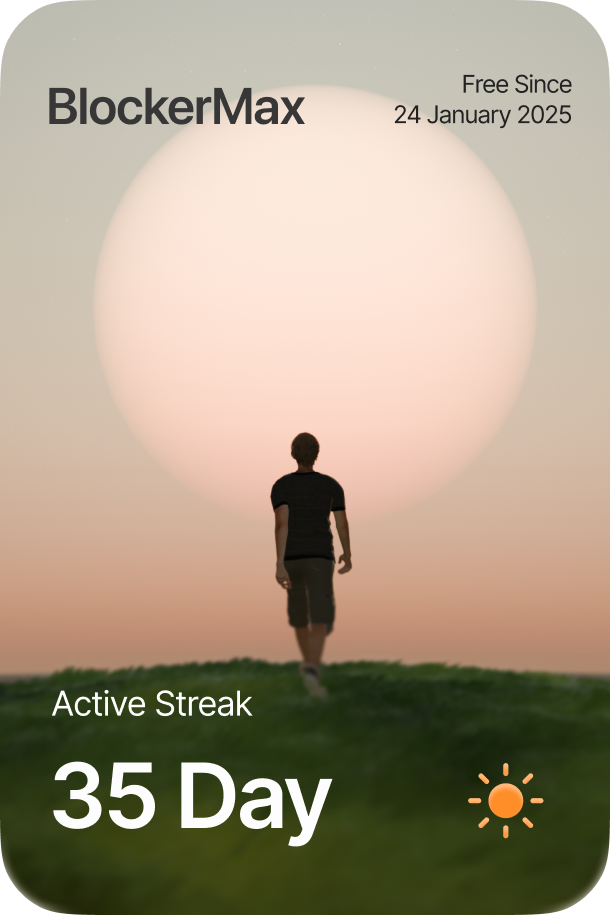
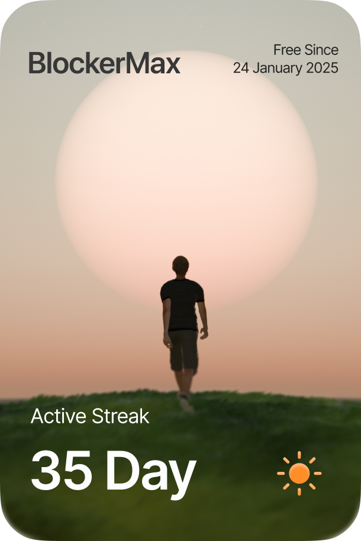

What Is BlockerMax App?
BlockerMax is a digital wellness and focus control app designed to help users block distracting,
harmful, and addictive content across their devices. BlockerMax helps users regain control over
their attention, reduce compulsive behaviors, and build healthier digital habits through
science-based focus and recovery tools.
BlockerMax combines content blocking, strict focus modes, behavioral nudges, and progress
tracking into a single system.
Is BlockerMax Free?
No, BlockerMax is not completely free.
BlockerMax uses a subscription-based model. Pricing varies depending on plan length and
promotions.
- Monthly plans typically range between $9.99 – $14.99
- Annual plans offer discounted monthly pricing
- Lifetime access may be available during limited campaigns
How To Access BlockerMax?
You can access BlockerMax on:
- iOS devices
- Android devices
BlockerMax integrates deeply with system-level APIs to ensure reliable blocking and focus
enforcement. The BlockerMax website also provides access to account management, educational
resources, and support documentation.
What Features Does BlockerMax Include?
BlockerMax includes a set of features designed to help users reduce distractions, break
compulsive habits, and improve focus:
- Content Blocking: Blocks distracting websites, apps, and harmful content
across the operating system.
- Strict Mode: Prevents disabling blockers or uninstalling the app during
active focus sessions.
- Focus Sessions: Time-based focus modes that lock distractions and reinforce
intentional device use.
- Progress Tracker: Tracks streaks, focus time, and habit consistency.
- Urge Management Tools: Immediate tools that help users interrupt impulsive
behavior.
What Does BlockerMax Content Blocker Do?
The BlockerMax Content Blocker prevents access to distracting websites, apps, and harmful
content. It works system-wide and blocks:
- Adult and explicit content
- Distracting websites and apps
- Risky search terms and URLs
The blocker operates across all supported browsers and apps, helping users avoid relapse into
unwanted digital behaviors.
What Is BlockerMax Strict Mode?
Strict Mode is designed to protect users during moments of low willpower. When enabled, Strict
Mode:
- Prevents app uninstallation
- Restricts changing blocker settings
- Enforces focus rules until the session ends
This helps users stay committed to their goals even during high-temptation moments.
What Does BlockerMax Panic / Interrupt Mode Do?
The Interrupt Mode helps users break out of autopilot behavior. It offers:
- Immediate distraction breakers
- Simple grounding and breathing techniques
- Motivational reminders of progress
This mode is especially useful during moments of stress, boredom, or fatigue when self-control is
low.
What Does BlockerMax Tracker Do?
The BlockerMax Tracker visualizes progress over time. It tracks:
- Focus streaks
- Days of consistent usage
- Completed focus sessions
Seeing progress helps reinforce positive behavior and long-term habit formation.
How Does BlockerMax Gamification System Work?
BlockerMax uses light gamification to reinforce healthy digital habits without overstimulation.
Gamification elements include:
- Streak-based progress visualization
- Milestone rewards
- Visual indicators of long-term improvement
The goal is to support motivation while avoiding dopamine overload.
What Is BlockerMax Personalized Plan?
The BlockerMax Personalized Plan adapts the app experience based on user behavior and
preferences. Personalization may include:
- Suggested focus durations
- Custom blocking rules
- Adaptive reminders and nudges
This helps users build habits that fit their lifestyle instead of using one-size-fits-all rules.
Can BlockerMax Help Rewire Digital Habits?
Yes. BlockerMax is designed to support habit rewiring by reducing instant gratification loops and
reinforcing intentional device use. It combines:
- Content restriction
- Behavioral feedback
- Consistency tracking
Over time, this helps users regain focus, improve productivity, and feel more in control of their
digital lives.
Does BlockerMax Address Dopamine Overstimulation?
Yes. BlockerMax helps reduce dopamine overstimulation caused by excessive screen time, social
media, and addictive content. The app promotes:
- Low-stimulation focus modes
- Reduced impulsive checking
- Structured digital routines
This supports a healthier reward system over time.
Can BlockerMax Help Replace Distractions With Positive Habits?
Yes. BlockerMax encourages users to replace distractions with intentional activities such as
focused work, reading, rest, or offline tasks. Many users report:
- Improved concentration
- Better work output
- Reduced anxiety around phone usage
- More intentional daily routines
How Does BlockerMax Use Behavioral Science?
BlockerMax is built on behavioral science principles, including habit loops, friction design, and
consistency reinforcement. Key concepts include:
- Reducing access to triggers
- Increasing friction for bad habits
- Reinforcing positive behavior through progress feedback
The system is designed to support long-term habit change rather than short-term restriction.
 Walking to light together
Walking to light together


 
